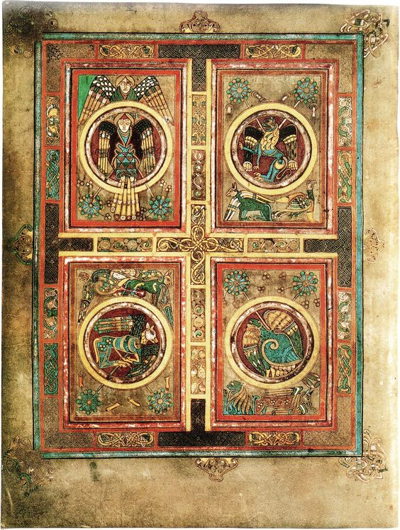

The Book of Kells

Happy

Sad

Happy
Happy
Sad
Happy

happy
sad

The Old Library is one of Ireland's most famous landmarks and one of the greatest libraries in the entire world. In its distinctive twin function as a top-notch library and a national cultural institution, it unites legacy and scholarship. For more than 400 years, the Library of Trinity College Dublin has been responsible for caring for its priceless treasures, which span millennia. However, it currently confronts serious environmental and conservation challenges. To protect the Old Library structure and preserve its priceless treasures for future generations, the Old Library Redevelopment Project will make use of the best design and technology of the twenty-first century. It entails immediate structural and environmental improvements as well as the renovation of the facilities to match the top libraries and museums throughout the globe. A top-notch design team is being led by the award-winning architects Heneghan Peng in this game-changing construction.